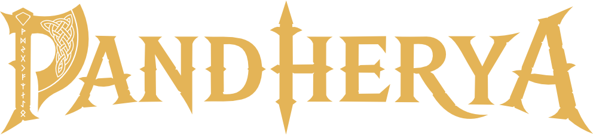
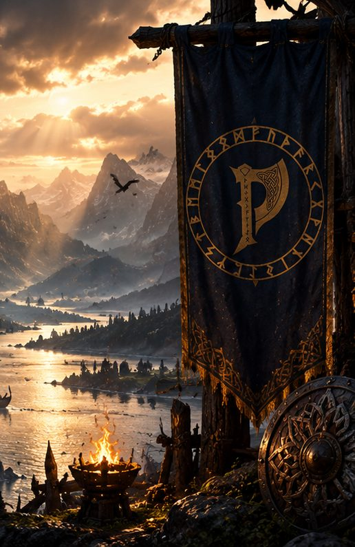
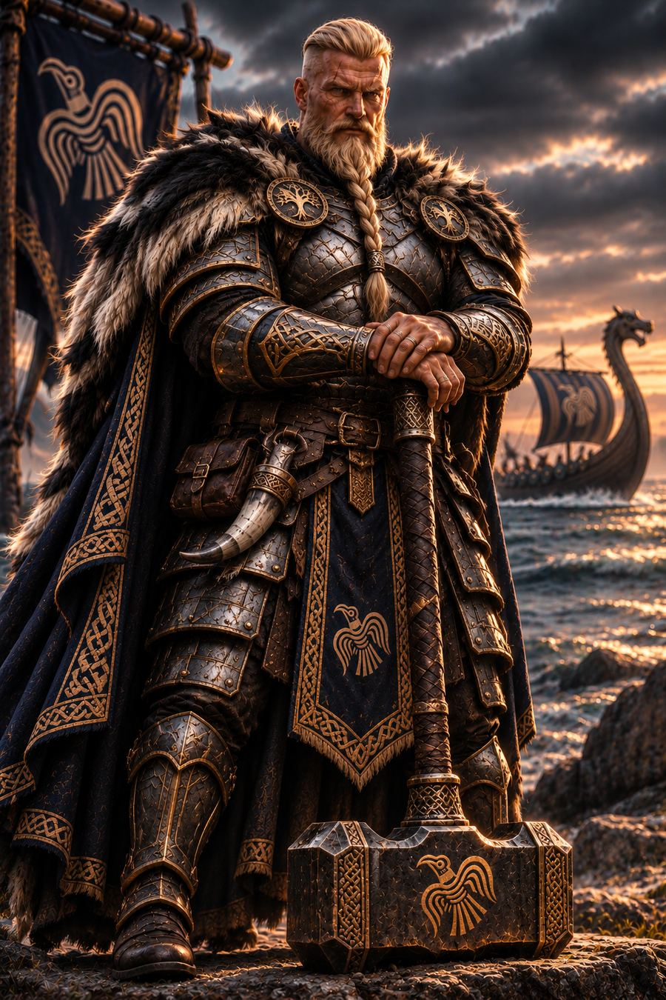
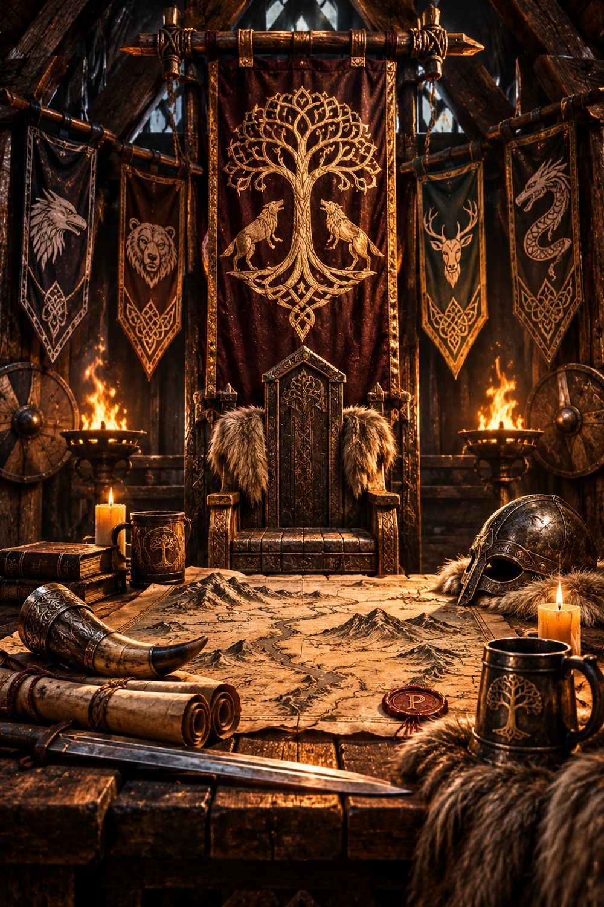
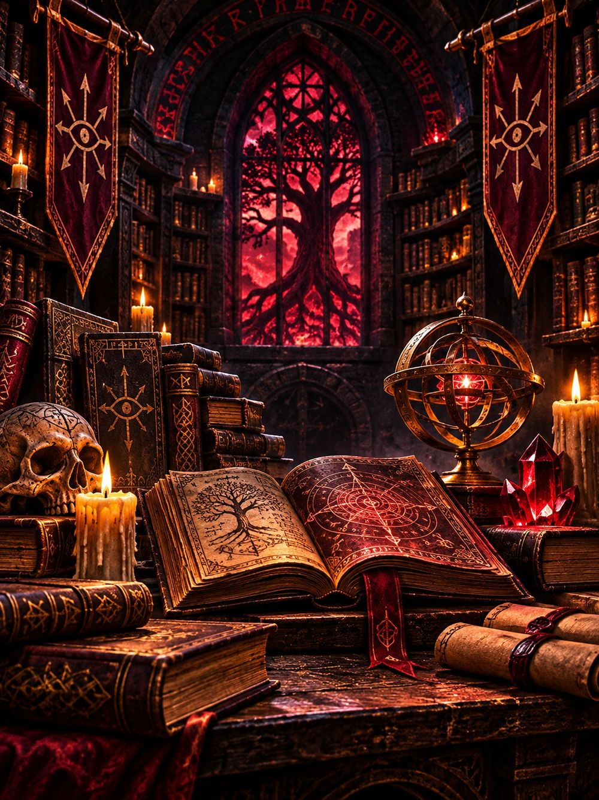

World Compendium
7ª Temporada · A Grande Ironia

CARTOGRAFIA
Explore Pandherya
EXPLORE
PERSONAGENS
Conheça os Heróis
EXPLORE
ORDENS & CASAS
Clãs de Pandherya
EXPLORE
BIBLIOTECA
A Grande Biblioteca
EXPLOREPANDHERYA WIKI